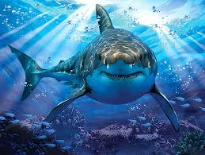

Sharks are a group of elasmobranch fish characterized by a cartilaginous skeleton, five to seven gill slits
on the sides of the head, and pectoral fins that are not fused to the head. Modern sharks are classified
within the clade Selachimorpha (or Selachii) and are the sister group to the rays. However, the term "shark"
is also used to refer to extinct shark-like members of the subclass Elasmobranchii, such as hybodonts, that
lie outside the modern group.
Modern sharks first appeared and diversified during the Jurassic period.[1] Since then, sharks have
diversified into over 500 species. They range in size from the small dwarf lanternshark (Etmopterus perryi),
a deep sea species that is only 17 centimetres (6.7 in) in length, to the whale shark (Rhincodon typus), the
largest fish in the world, which reaches approximately 12 metres (40 ft) in length.[2] Sharks are found in
all seas and are common to depths up to 2,000 metres (6,600 ft). They generally do not live in freshwater,
although there are a few known exceptions, such as the bull shark and the river shark, which can be found in
both seawater and freshwater.[3] Sharks have a covering of dermal denticles that protects their skin from
damage and parasites in addition to improving their fluid dynamics. They have numerous sets of replaceable
teeth.[4]
Several species are apex predators, which are organisms that are at the top of their food chain. Select
examples include the tiger shark, blue shark, great white shark, mako shark, thresher shark, and hammerhead
shark.
Sharks are caught by humans for shark meat or shark fin soup. Many shark populations are threatened by human
activities. Since 1970, shark populations have been reduced by 71%, mostly from overfishing.